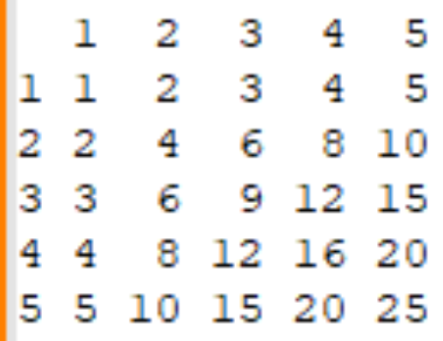

Тестовое задание
Задача 1
Разработайте функцию, которая принимает целое число в качестве аргумента и возвращает строку, содержащую это число и слово "компьютер" в нужном склонении по падежам в зависимости от числа. Например, при вводе числа 25 функция должна возвращать "25 компьютеров", для числа 41 — "41 компьютер", а для числа 1048 — "1048 компьютеров".
Ответ:
Задача 2
Написать функцию/метод, которая на вход получает массив положительных целых чисел произвольной длины. Например [42, 12, 18]. На выходе возвращает массив чисел, которые являются общими делителями для всех указанных числе. В примере это будет [2, 3, 6].
Массив: []
Ответ:
Задача 3
Написать функцию/метод, которая возвращает массив простых чисел в
диапазоне (2 числа - минимальное и максимальное) заданных чисел.
Например, на вход переданы 2 числа: от 11 до 20 (диапазон считается
включая граничные значения).
На выходе программа должна выдать [11, 13 , 17, 19]
Задача 4
Написать метод, который в консоль выводит таблицу умножения. На вход метод получает число, до которого выводит таблицу умножения. В консоли должна появиться таблица. Например, если на вход пришло число 5, то получим:
